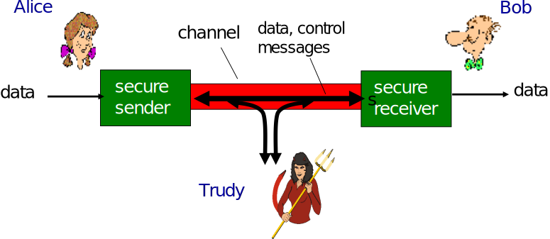
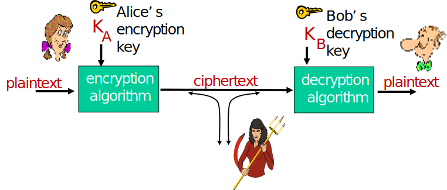
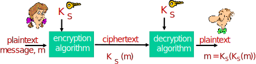
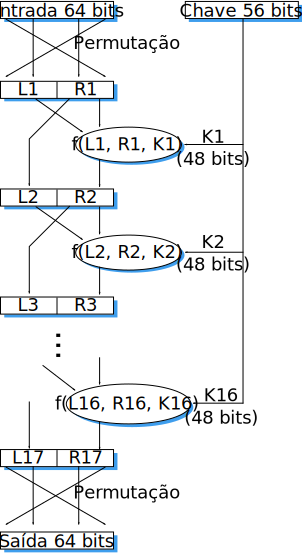
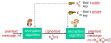
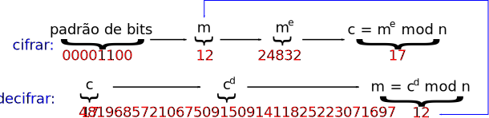

Aula 13 - Segurança: Conceitos, Criptografia
Diego Passos
Universidade Federal Fluminense
Redes de Computadores II
Na Última Aula...
IP Móvel:
Roteamento indireto
.
Descoberta de agentes através de mensagens ICMP.
Registro com agentes.
IP Móvel e segurança.
É preciso haver algum tipo de
autenticação
.
Mobilidade celular:
Mobilidade entre operadoras diferentes:
roaming
.
HLR: informações de usuários
originalmente
daquela operadora.
VLR: informações de usuários que,
no momento
, estão naquela rede.
Roteamento indireto
.
Rede de origem encaminha ligações para rede de atual.
Mobilidade celular:
Handoff
: mobilidade entre duas estações bases.
Objetivo: manter ligações sem interrupção.
Usuário monitora
conectividade com estações base.
Envia dados para estação base atual.
Rede
instrui usuário a fazer o
handoff
.
Pode ocorrer também entre torres de MSCs diferentes.
Objetivos do Capítulo 8
Entender os princípios de segurança em redes.
Criptografia e seus
muitos
usos além da “confidencialidade”.
Autenticação.
Integridade de mensagens.
Segurança na prática.
Firewalls e sistemas de detecção de intrusão.
Segurança nas camadas de aplicação, transporte, rede e enlace.
Agenda
O que é segurança em redes?
Princípios de criptografia.
Integridade de mensagens e autenticação.
E-mail seguro.
Conexões TCP seguras: SSL.
Segurança na camada de rede: IPsec.
Segurança em LANs sem fio.
Segurança operacional: firewalls e IDS.
O Que É Segurança em Redes?
O Que É Segurança em Redes
Requisitos de segurança:
Confidencialidade:
apenas origem e destino devem “entender” conteúdo da mensagem.
Origem criptografa/cifra mensagem.
Destino descriptografa/decifra.
Autenticidade:
origem e destino querem confirmar a identidade um do outro.
Integridade:
origem e destino querem garantir que mensagem não seja alterada (em trânsito ou depois) sem detecção.
Acesso e disponibilidade:
serviços precisam estar acessíveis e disponíveis para os usuários.
Amigos e Inimigos: Alice, Bob e Trudy
Termos muito usados no mundo da segurança de redes.
Bob e Alice (amantes!) querem se comunicar de forma “segura”.
Trudy (intrusa) pode interceptar, apagar e criar mensagens.

Quem Seriam Bob e Alice?
Bem..., Bobs e Alices da vida real!
Browser/servidor para transações eletrônicas (
e.g.
, compras on-line).
Cliente/servidor de Internet banking.
Servidores de DNS.
Roteadores trocando mensagens de atualização de rotas.
Outros exemplos?
Existem Pessoas Mal-intencionadas por aí!
Pergunta:
o que alguém “mal-intencionado” faz?
Resposta:
muita coisa (ver seção 1.6):
Eavesdrop:
interceptar mensagens alheias.
Inserir
ativamente mensagens na comunicação.
Personificação:
falsificar (
spoof
) endereço de origem no pacote (ou qualquer outro campo).
Sequestro:
assumir controle de comunicação em andamento através da substituição da origem ou do destino por si próprio.
Negação de serviço:
não permitir que serviço seja usado por outros (
e.g.
, sobrecarregando recursos).
Princípios de Criptografia
Criptografia: Objetivos
Criptografia é uma das bases da segurança em redes.
Originalmente, objetivo era
ofuscar
mensagens.
Fazer com que mensagem ficasse
ininteligível
para pessoas/dispositivos não autorizados.
Mas
ainda compreensível por indivíduos autorizados.
Hoje
, métodos de criptografia são usados com vários outros propósitos adicionais.
Em alguns casos, mensagens criptografadas são compreensíveis para qualquer um.
Criptografia é usada apenas por conta de
outras propriedades
.
Estudadas em detalhes nas próximas aulas.
O Jargão da Criptografia

Onde:
m:
mensagem em
texto plano/texto aberto/texto claro
.
K
A
(m):
mensagem cifrada com a chave K
A
(texto cifrado).
m = K
B
(K
A
(m))
.
Quebrando um Esquema de Criptografia
Acesso apenas à mensagem cifrada:
Trudy possui a mensagem cifrada, pode analisá-la.
Duas abordagens:
Força bruta: realizar busca em todas as chaves possíveis.
Análise estatística.
Ataques baseados em texto plano conhecido:
De alguma forma, Trudy conhece o texto plano correspondente à mensagem cifrada.
e.g.
, em uma cifra de substituição, Trudy determina pares para letras como s, r.
Ataque baseado em texto plano escolhido:
Trudy pode conseguir versão cifrada de um texto plano escolhido por ela.
Criptografia de Chave Simétrica

Bob e Alice compartilham a mesma chave (simétrica).
e.g.
, chave é uma tabela que descreve padrão de substituição em um esquema de cifra de substituição.
Pergunta:
como Bob e Alice estabelecem o valor da chave?
Esquema Simples de Criptografia
Cifra de substituição:
substitui uma coisa por outra.
Cifra monoalfabética: substitui uma letra por outra.
Texto plano:
a
b
c
d
e
f
g
h
i
j
k
l
m
n
o
p
q
r
s
t
u
v
w
x
y
z
↓
↓
Mensagem cifrada:
m
n
b
v
c
x
z
a
s
d
f
g
h
j
k
l
p
o
i
u
y
t
r
e
w
q
Exemplo:
Texto plano:
b
o
b
.
i
l
o
v
e
y
o
u
.
a
l
i
c
e
Mensagem cifrada:
n
k
n
.
s
g
k
t
c
w
k
y
.
m
g
s
b
c
Chave de criptografia:
mapeamento do conjunto de 26 letras para um outro conjunto de 26 letras.
Uma Abordagem Criptográfica mais Sofisticada
n
cifras de substituição, M
1
, M
2
, ..., M
n
.
Padrões cíclicos:
e.g.
, n = 4: M
1
, M
3
, M
4
, M
3
, M
2
; M
1
, M
3
, M
4
, M
3
, M
2
; ...
Para cada novo símbolo em texto plano, utiliza-se o padrão de substituição seguinte no ciclo.
cachorro: c de M
1
, a de M
3
, c de M
4
, ...
Chave de criptografia:
n cifras de substituição e o padrão cíclico.
Chave não é necessariamente um simples padrão de
m
bits.
Criptografia de Chave Simétrica: DES (I)
DES:
Data Encryption Standard
.
Padrão norte-americano de criptografia [NIST 1993].
Chave simétrica de 56 bits, texto plano de entrada em
blocos
de 64 bits.
Cifra de bloco
com
encadeamento
de cifras.
O quão seguro é o DES?
Desafio do DES: mensagem criptografada com chave de 56 bits quebrada (força bruta) em menos de um dia.
Não são conhecidos bons ataques analíticos.
Tornando o DES mais seguro:
3DES: cifrar 3 vezes com 3 chaves diferentes.
Criptografia de Chave Simétrica: DES (II)
Operação do DES
Permutação inicial.
16 “rodadas” idênticas de aplicação da função, cada uma usando porções diferentes de 48 bits da chave.
Permutação final.

AES:
Advanced Encryption Standard
Padrão do NIST para criptografia de chave simétrica, substituiu o DES (Novembro de 2001).
Processa dados em blocos de 128 bits.
Chaves de 128, 192 ou 256 bits.
Se um computador fosse capaz de quebrar por força bruta (tentar cada chave) o DES em 1 segundo, levaria 149 trilhões de anos para quebrar o AES.
Criptografia de Chave Pública (I)
Criptografia de chave simétrica:
Requer que origem e destino conheçam a chave secreta compartilhada.
Pergunta: como esta chave é estabelecida inicialmente (particularmente, se os lados nunca “se conheceram”)?
Criptografia de chave pública
Abordagem radicalmente diferente [Diffie-Hellman76, RSA78].
Origem e destino
não
compartilham chave secreta.
Chave
pública
(cifrar) conhecida por
todos
.
Chave
privada
(decifrar) conhecida apenas pelo receptor.
Criptografia de Chave Pública (II)

Algoritmos de Criptografia de Chave Pública
Requisitos:
São necessárias chaves
\(K^{+}_{B}(.)\)
e
\(K^{-}_{B}(.)\)
tais que:
\(K^{-}_{B}(K^{+}_{B}(m)) = m\)
Dada a chave pública
\(K^{+}_{B}\)
deve ser impossível computar a chave privada
\(K^{-}_{B}\)
.
Impossível = computacionalmente inviável.
RSA:
Algoritmo criado por Rivest, Shamir, Adleman.
Pré-requisito: Aritmética Modular
x mod n = resto da divisão de x por n.
Fatos:
[(a mod n) + (b mod n)] mod n = (a + b) mod n
[(a mod n) - (b mod n)] mod n = (a - b) mod n
[(a mod n) * (b mod n)] mod n = (a * b) mod n
Logo:
\((a\;\textrm{mod}\;n)^d\;\textrm{mod}\;n = a^d\;\textrm{mod}\;n\)
Exemplo: x = 14, n = 10, d = 2.
\((x\;\textrm{mod}\;n)^d\;\textrm{mod}\;n = 4^2\;\textrm{mod}\;10 = 6\)
\(x^d = 14^2 = 196\quad x^d\;\textrm{mod}\;10 = 6\)
RSA: Conceitos
Mensagem: apenas uma sequência de bits.
Sequência de bits pode ser unicamente representada por um número inteiro.
Logo, cifrar uma mensagem é equivalente a cifrar um número.
Exemplo:
m =
10010001
. Esta mensagem é unicamente representada pelo número decimal 145.
Para criptografar m, basta cifrar o número correspondente, obtendo-se um novo número (texto cifrado).
RSA: Criação do Par de Chaves Pública/Privada
Escolha dois números primos grandes
p, q
(
e.g.
, de 1024 bits cada).
Compute
n
= pq, z = (p-1)(q-1).
Escolha um valor
e
(com e < n) que não possua fatores primos em comum com z (
i.e.
,
e, z
são coprimos).
Escolha
d
tal que ed-1 é divisível por z (
i.e.
, ed mod z = 1).
A chave pública é
\(K^{+}_{B} = (n, e)\)
e a chave privada é
\(K^{-}_{B} = (n, d)\)
.
RSA: Cifragem e Deciframento
Dados
(n, e)
e
(n, d)
como descrito no slide anterior:
Para cifrar uma mensagem m (< n), calcule:
\(c = m^e\; mod\; n\)
Para decifrar o padrão de bits recebido, c, calcule:
\(m = c^d\; mod\; n\)
Mágica acontece!
\(m = (\smash{\underbrace{m^e\;mod\;n}_{\large\text{c}}})^d\;mod\;n\)
RSA: Exemplo
Bob escolhe p = 5, q = 7. Logo, n = 35, z = 24.
e = 5 (tal que e, z são coprimos).
d = 29 (tal que ed - 1 é divisível por z).
Cifragem de mensagem de 8 bits:

Por Que o RSA Funciona?
Precisamos mostrar que
\(c^d\;mod\;n = m\)
, onde
\(c = m^e\;mod\;n\)
.
Fato: para qualquer x, y,
\(x^y\;mod\;n = x^{(y\;mod\;z)}\;mod\;n\)
.
Onde n = pq e z = (p-1)(q-1).
Consequência do Teorema de Euler.
Logo:
\( \begin{align} c^d\;mod\;n & = (m^e\;mod\;n)^d\;mod\;n\\ & = m^{ed}\;mod\;n\\ & = m^{(ed\;mod\;z)}\;mod\;n\\ & = m^1\;mod\;n\\ & = m \end{align} \)
RSA: Outra Propriedade Importante
A seguinte propriedade será
muito
importante em breve:
\(\underbrace{K^{-}_{B}\left(K^{+}_{B}(m)\right)} = m = \underbrace{K^{+}_{B}\left(K^{-}_{B}(m)\right)}\)
Use a chave pública, seguida da chave privada.
Use a chave privada, seguida da chave pública.
Resultado é o mesmo!
Por Que a Ordem Não Importa?
Consequência direta da aritmética modular:
\( \begin{align} (m^e\;mod\;n)^d\;mod\;n = & m^{ed}\;mod\;n\\ & m^{de} \;mod\;n\\ & (m^d\;mod\;n)^e\;mod\;n \end{align}\)
Por Que o RSA é Seguro?
Assuma que você conhece a chave pública de Bob (n, e).
O quão difícil é determinar d?
Se soubéssemos o valor de z (lembrando: z = (p-1)(q-1), onde n = pq), seria trivial.
Não conhecemos z, mas conhecemos n. Ambos os valores são relacionados através dos fatores p e q.
Logo, basicamente precisamos
fatorar
o número n.
Mas se n é grande (
i.e.
, muitos algarismos), fatoração é computacionalmente difícil.
Ao menos hoje, não conhecemos algoritmos eficientes.
RSA na Prática: Chaves de Sessão
Exponenciação usada no RSA é computacionalmente intensiva.
DES é, ao menos, 100 vezes mais rápido que o RSA.
Na prática, utiliza-se criptografia de chave pública para
estabelecer uma conexão segura
e uma
chave simétrica
para a criptografia dos dados.
Chamada
chave de sessão
.
Chave de sessão K
S
.
Bob e Alice usam RSA para combinar uma chave simétrica K
S
.
Uma vez que ambos possuem K
S
, eles utilizam criptografia de chave simétrica.
Resumo da Aula...
Requisitos de segurança:
Confidencialidade:
apenas origem e destino entendem mensagens.
Autenticidade:
origem e destino são quem dizem ser.
Integridade:
mensagens não são alteradas (c.c., podemos detectar).
Acesso e disponibilidade:
serviços precisam estar disponíveis.
Jargão típico:
Alice, Bob, Trudy.
Chaves.
Texto plano, texto cifrado
.
Ataques típicos:
Eavesdrop
,
inserção de mensagens
,
spoofing
,
sequestro de conexão
,
negação de serviço
.
Criptografia: tipos.
Chave simétrica: ambos os lados
compartilham uma única chave
.
Exemplos: DES, AES.
Chave pública: há duas chaves, uma com cada parte.
O que a
chave pública
cifra, a
chave privada
decifra.
E vice-versa.
Exemplo: RSA.
RSA: funcionamento.
Chaves:
(n, e) e (n, d)
.
Mensagem:
número
menor que n.
Cifragem: c = m
e
mod n.
Deciframento: m = c
d
mod n.
Seguro:
difícil fatorar n
.
Leitura e Exercícios Sugeridos
Conceitos de segurança:
Páginas 492 a a 494 do Kurose (Introdução do Cap. 8 e Seção 8.1).
Exercícios de fixação 1 e 2 do Capítulo 8 do Kurose.
Criptografia:
Páginas 494 a a 504 do Kurose (Seção 8.2.1).
Exercícios de fixação 3, 6, 7, e 8 do Capítulo 8 do Kurose.
Problemas 1, 2, 3, 7 e 9 do Capítulo 8 do Kurose.
Próxima Aula...
Vamos falar sobre dois outros requisitos de segurança:
Autenticação: comprovar que a outra parte é quem diz ser.
Integridade: garantir que uma mensagem não foi alterada.
Ou detectar, caso tenha sido.